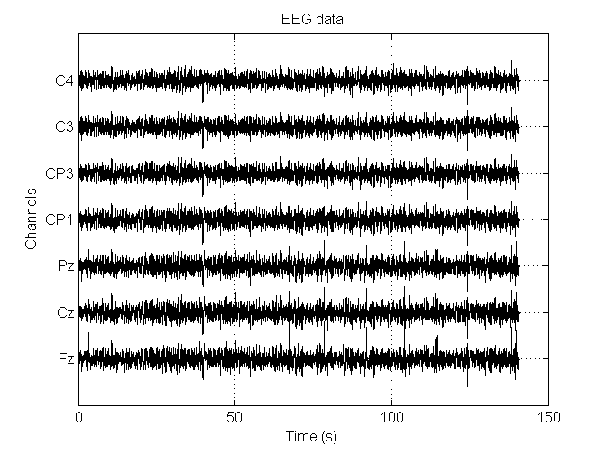
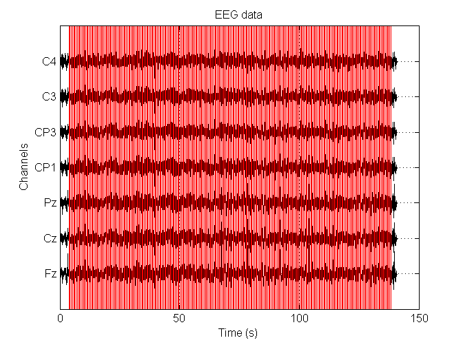
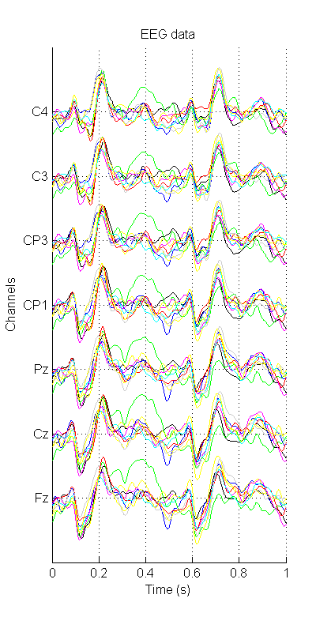

Contents
function tutorial1()
1. Load EEG data and plotting an ERP
In this tutorial we will do some simple EEG data analysis in order to 'read' a subjects mind. This experiment is playfully called the "magic trick". The subject was sitting in front of a screen and was presented with 9 playing cards:
- Ace of spades
- Jack of clubs
- Queen of hearts
- King of diamonds
- 10 of spaces
- 3 of clubs
- 10 of hearts
- 3 of diamonds
- King of spades
He picked one of these cards and kept it in his mind. Next, the 9 playing cards would flash one-by-one in a random order across the screen. Each card was presented a total of 30 times. The subject would mentally count the number of times his card would appear on the screen (which was 30 if he was paying attention, we are not interested in the answer he got, it just helps keep the subject focused on the cards). In this tutorial we will analyse the average response to each card. The card that the subject had in mind should produce a larger response than the others.
First off, let's download the data. I've created a public dropbox folder where I store it. Execute the code below. It will take some time to run, depending on the speed of your internet connection.
NOTE: The data used in this tutorial is EEG data that has been bandpass filtered with a 3rd order Butterworth filter with a passband of 0.5-30 Hz. This results in relatively clean looking data. When doing ERP analysis on other data, you will probably have to filter it yourself. Don't do ERP analysis on non-filtered, non-baselined data! Bandpass filtering is covered in the 3rd tutorial.
urlwrite('http://dl.dropbox.com/u/79303435/tutorial1-01.mat?dl=1', 'tutorial1-01.mat');
After the above code has finished running, we have a file biosemi-03-filtered.mat in our current directory. It is stored in the default MATLAB format, which we can load:
m = load('tutorial1-01.mat'); disp('Fields of m:'); disp(fields(m));
Fields of m:
'EEG'
'labels'
The load function returns a structure containing the variables stored in the matlab file. Two of them are of interest to us, the actual EEG and the labels which indicate at which point in time which card was presented to the subject.
EEG = m.EEG; labels = m.labels; disp('EEG dimensions:'); disp(size(EEG)); disp('Label dimensions:'); disp(size(labels));
EEG dimensions:
7 288349
Label dimensions:
1 288349
The EEG variable is a matrix containing 7 rows that contain the signal collected from 7 electrodes. The label variable contains the output of our trigger cable, which was used to synchronize the EEG signal with what was happening on the screen. Every time we presented a card on the screen, we send a non-zero value through the trigger cable. The labels variable will therefore contain mostly zeros, but non-zero values at the moments in time we presented a card to the subject. Lets plot the raw EEG data:
plot(EEG')

All channels are drawn on top of each other, which is not convenient. Usually, EEG data is plotted with the channels horizontally stacked, an artefact stemming from the days where EEG machines drew on large rolls of paper. Lets add a constant value to each EEG channel before plotting them and some decoration like a meaningful x and y axis. I'll write this as a function, since this will come in handy later on:
function plot_eeg(EEG, vspace, color) % plot_eeg(EEG, vspace, color) % % Plot the EEG data, stacking the channels horizontally on top of each other. % % Arguments: % EEG - Array (channels x samples) containing the EEG data % vspace - Amount of vertical space to put between the channels % color - Color to draw the EEG in (for example 'k' for black) nchannels = size(EEG, 1); nsamples = size(EEG, 2); % Calculate the bases for each channel bases = vspace * (1:nchannels); % vspace * 0, vspace * 1, ..., vspace * 6 % Add the bases to the EEG channels. Note the usage of 'repmat' to % clone the bases vector 'nsamples' times. This is necessary, as both % sides of the + sign must be a matrix of the same dimensions. EEG = EEG + repmat(bases', 1, nsamples); % Calculate a timeline in seconds, knowing that the sample rate of the % EEG recorder was 2048 Hz. samplerate = 2048; time = (1:nsamples) / samplerate; % Plot EEG versus time plot(time, EEG', 'Color', color); % Add gridlines to the plot grid(); % Label the axes xlabel('Time (s)'); ylabel('Channels'); % The y-ticks are set to the locations of the electrodes. The % international 10-20 system defines default names for them. set(gca, 'YTick', bases); set(gca, 'YTickLabel', {'Fz', 'Cz', 'Pz', 'CP1', 'CP3', 'C3', 'C4'}); % Put a nice title on top of the plot title('EEG data'); end
Testing our function:
plot_eeg(EEG, 100, 'k');
 And to top it off, lets add vertical lines whenever a card was shown to the subject:
hold on; % Draw in the previous plot max_y = get(gca, 'YLim'); for onset = find(labels) line([onset onset] / 2048, max_y, 'Color', 'r'); end hold off; % As you can see, cards were shown at a rate of 2 per second.
We are interested in the response generated whenever a card was shown, so we cut one-second-long pieces of EEG signal that start from the moment a card was shown. These pieces will be named 'trials'. A useful function here is find which returns all the indices of an array which contain to a non-zero value. It effectively gives us the time (as an index) when a card was shown, if we use it in a clever way:
onsets = find(labels == 4); disp('Onsets:'); disp(onsets); disp('Number of onsets:'); disp(length(onsets));
Onsets:
Columns 1 through 6
15959 24151 26199 39511 47703 54871
Columns 7 through 12
63063 80471 82519 97878 99926 110166
Columns 13 through 18
122454 128598 141910 147030 156280 169592
Columns 19 through 24
180856 191096 195192 207480 216695 221815
Columns 25 through 30
230007 243319 251511 264823 268919 281207
Number of onsets:
30
Each of the 9 cards was shown 30 times. Lets create a 4-dimensional array containing all the trials:
nclasses = 9; % 9 playing cards ntrials = 30; % each card was shown 30 times nchannels = 7; % 7 EEG channels sample_rate = 2048; % The sample rate of the EEG recording device was 2048Hz nsamples = 1.0 * sample_rate; % one second's worth of data samples trials = zeros(nclasses, ntrials, nchannels, nsamples); for card = 1:nclasses onsets = find(labels == card); for trial = 1:length(onsets) onset = onsets(trial); trials(card, trial, :, :) = EEG(:, onset:onset+nsamples-1); end end disp('Size of trials array:'); disp(size(trials));
Size of trials array:
9 30 7 2048
Lets plot one of the trials:
trial = squeeze(trials(1,1,:,:)); % squeeze drops all singleton dimensions plot_eeg(trial, 30, 'k');

Looking at the individual trials is not all that informative. Lets calculate the average response to each card and plot that:
erp = squeeze(mean(trials, 2)); % such an average is called an ERP in the % literature % Lets give each response a different color colors = {'k', 'b', 'g', 'y', 'm', 'r', 'c', [1,1,0], [0.8,0.8,0.8]}; figure('Position', [100, 100, 400, 800]); hold on; % Draw each class on top of the others for i = 1:nclasses plot_eeg(squeeze(erp(i,:,:)), 20, colors{i}); end hold off;
One of the cards jumps out: the one corresponding to the green line. You can see it most clearly at channel Cz around 0.4 seconds. This line corresponds the the 3rd card which turns out to be the queen of hearts.
end